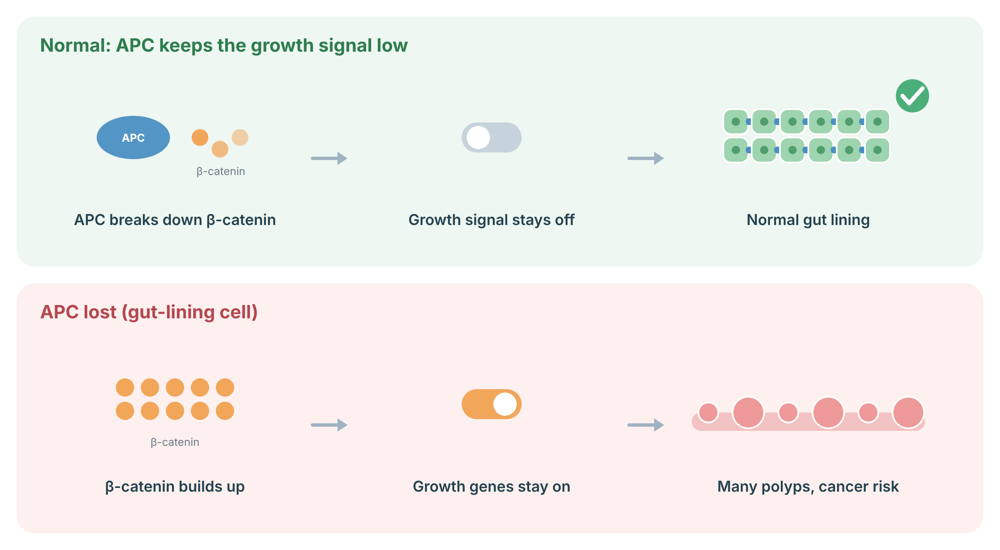

A practical, guideline-based plan for people with a pathogenic APC variant — classic familial adenomatous polyposis (FAP), attenuated FAP (AFAP), and the lower-risk APC I1307K variant. Written for patients and their care teams to read together.
The APC gene normally acts as a brake on cell growth in the lining of your bowel. If you inherited a change (variant) that switches off one copy of this gene, that brake is weaker. Over time, small growths called polyps form in the colon. Each polyp has a small chance of turning into cancer, and in this condition there can be many polyps, so the overall risk adds up.
The good news: we can see and remove polyps with a camera test (colonoscopy), and when there are too many to manage that way, surgery to remove the at-risk bowel almost completely prevents colon cancer. People with this condition who stay in surveillance live full lives. The plan below explains what to watch and when.
Familial adenomatous polyposis is an autosomal dominant syndrome caused by a germline pathogenic or likely pathogenic variant in APC on chromosome 5q22. A truncating variant is identifiable in roughly 80% of clinically classic cases. The hallmark is multiple colorectal adenomas, with cumulative risk driving near-certain colorectal cancer in untreated classic disease.
The phenotype is a spectrum, and surveillance should be calibrated to the individual's observed phenotype rather than to genotype alone, though some genotype–phenotype correlations exist:
APC polyposis is also a systemic condition. Beyond the colon, it carries risks in the duodenum and stomach, the thyroid, the desmoid (soft-tissue fibromatosis) compartment, the liver in early childhood (hepatoblastoma), and the central nervous system (medulloblastoma). Benign features such as osteomas, epidermoid cysts, dental anomalies, and congenital hypertrophy of the retinal pigment epithelium (CHRPE) may be present but do not themselves require oncologic surveillance.
MUTYH-associated polyposis (MAP), POLE/POLD1 polyposis, and other adenomatous polyposis syndromes can look clinically similar but are genetically distinct and managed differently. This protocol applies only to confirmed germline APC variants. Germline testing is what distinguishes them.
The lining of the bowel renews itself constantly, and a growth signal (Wnt) controls how fast. APC keeps this signal low by breaking down a messenger protein called β-catenin. When a gut-lining cell loses both working copies of APC, β-catenin builds up, growth genes stay switched on, and polyps form, which can turn into cancer over time.
APC: With one non-working APC copy from birth, many gut-lining cells lose the second copy over time, which is why hundreds to thousands of polyps can form.

Sources: Clevers H, Nusse R. Wnt/β-catenin signaling and disease. Cell 2012;149:1192–205 (PubMed).
The table below shows the lifetime chance of different cancers for each form of the condition. These are population estimates, not your personal certainty. Most of these risks are reduced dramatically by the surveillance and surgery described later. The colon risk is the one we act on first and most decisively.
| Site | Classic FAP | Attenuated FAP | General population |
|---|---|---|---|
| Colorectum (untreated) | ~100% | ~70% | ~4% |
| Duodenum / periampullary | ~4–10% (to ~18% by older age) | Similar; surveillance identical | <0.1% |
| Stomach (gastric adenocarcinoma) | ~0.1–7% | Lower | ~0.8% |
| Thyroid (papillary, often cribriform-morular) | ~1–12% | Similar | ~1% |
| Desmoid tumour (benign but morbid) | ~10–30% | Similar | Very rare |
| Hepatoblastoma (age <5, mainly boys) | ~1–2% | ~1–2% | Very rare |
| Medulloblastoma / CNS | <1% | <1% | Very rare |
| Pancreas | Slightly increased (data limited) | Slightly increased | ~1.5% |
Ranges are approximate and drawn from NCCN, ASGE, ACG, and GeneReviews summaries. Duodenal cancer and desmoid disease are the leading causes of cancer-related death after the colon is managed, which is why upper-GI and desmoid sections matter as much as the colon plan.
If you have classic FAP, regular colon checks start young — around age 10 to 15 — and continue every year or two until surgery. We also check the upper part of your gut (stomach and the first part of the small bowel) starting in your twenties, your thyroid by neck exam or ultrasound, and we feel the abdomen for desmoid growths. For very young children, there is a simple blood test and ultrasound in the first few years of life to watch the liver. Each of these has a clear schedule below.
Duodenal polyposis is scored 0–IV using polyp number, size, histology, and dysplasia. Surveillance frequency follows the stage (ACG / consensus intervals):
| Spigelman stage | Action / interval | Approx. duodenal cancer risk |
|---|---|---|
| 0 | EGD every ~4 years | Low |
| I | EGD every 2–3 years | Low |
| II | EGD every 1–3 years | ~2% |
| III | EGD every 6–12 months | ~2–2.5% |
| IV | Expert surveillance every 3–6 months; surgical evaluation (duodenectomy ± pancreas-sparing, or Whipple if ampulla involved) | ~36% |
Once treated endoscopically or surgically, continue surveillance based on the highest previous Spigelman stage. Note: a meaningful minority of duodenal cancers arise without prior stage IV, so clinical judgment overrides the score when lesions look concerning.
AFAP is a milder form. There are usually fewer polyps and they appear later, so colon checks start later — in the late teens to early twenties — and run every one to two years. Because polyps in AFAP often sit higher up in the colon, a full colonoscopy is needed; the shorter "sigmoidoscopy" test can miss them. Many people with AFAP can be managed for years with colonoscopy and polyp removal, and some avoid surgery altogether. The upper-GI, thyroid, and desmoid checks are the same as for classic FAP.
Identical to classic FAP: EGD with ampullary visualization from age 20–25 with Spigelman-based intervals, gastric polyp documentation, annual thyroid screening, and annual abdominal exam for desmoids. Hepatoblastoma surveillance applies in the same early-childhood window for affected or at-risk young children.
Variant location predicts attenuated disease imperfectly. If a person carrying a "classic" genotype shows an attenuated phenotype on scope — or vice versa — surveillance and surgical timing should follow what the bowel actually shows, not the predicted category.
I1307K is a common, milder change in the same gene, found in about 6–10% of people of Ashkenazi Jewish background. It is not the polyposis condition described above. It raises colon cancer risk by a modest amount. The practical effect is that we recommend starting colonoscopy earlier and repeating it more often than for the average person — but there is no need for the intensive yearly schedule, upper-GI checks, or surgery planning that FAP requires.
I1307K is a hypermutable allele rather than a classic loss-of-function truncating variant. It creates a poly-A tract prone to somatic slippage, modestly elevating colorectal cancer risk. It does not produce a polyposis phenotype and does not carry the extracolonic risk profile of classic APC truncating variants.
When polyps become too numerous or too risky to keep removing one by one, the safest path is surgery to remove the at-risk bowel. This is highly effective at preventing colon cancer. There are different operations, and the choice depends on how much of the rectum is involved, your age, and your preferences around quality of life. Timing is usually flexible enough to plan around school, work, and family. This is a decision we make together, not an emergency.
Classic FAP generally proceeds to colectomy in late adolescence or early adulthood, individualized to genotype, phenotype, and personal factors. Surgery is moved earlier for high or rapidly rising polyp burden, polyps >1 cm, advanced histology or high-grade dysplasia, or symptoms. In adolescents aged ~10–20 with limited adenomas (<6 mm, no villous change, no high-grade dysplasia), deferring surgery for physical and emotional maturity is reasonable under close surveillance.
In AFAP, surgery is driven by polyp burden rather than the diagnosis itself. Indications include rectal polyp burden >20, large polyps (>1 cm), or advanced histology.
| Procedure | Best suited to | Key trade-offs |
|---|---|---|
| Total abdominal colectomy with ileorectal anastomosis (IRA) | Limited rectal polyp burden; AFAP; preserving function | Retained rectum needs lifelong surveillance every 6–12 months; lower operative morbidity |
| Total proctocolectomy with ileal pouch-anal anastomosis (IPAA) | High rectal polyp burden; classic FAP with dense rectal disease | Removes rectal cancer risk; pouch still needs surveillance; effects on continence/fertility to discuss |
| Total proctocolectomy with end ileostomy | Low-lying tumour, technical constraints, or low surveillance adherence | Permanent stoma; chosen selectively |
The duodenum, stomach, retained rectum or pouch, thyroid, and desmoid compartment all remain at risk after colectomy. After the colon is managed, duodenal cancer and desmoid disease become the leading causes of cancer-related mortality. Lifelong follow-up continues.
Abdominal surgery is itself a trigger for desmoid tumours in predisposed individuals. Where feasible, minimizing the number of separate abdominal operations is preferred. Family history of desmoid disease should factor into both timing and surgical approach.
Desmoids are growths of scar-like tissue. They are not cancer and do not spread to other parts of the body, but they can grow, press on organs, and be hard to remove — especially when they sit inside the abdomen. They happen more often in FAP, and surgery or pregnancy can sometimes set them off. We watch for them with regular abdominal exams, and we have several treatment options if one appears. Most are managed without major surgery.
Desmoid fibromatosis affects roughly 10–30% of FAP patients and, with duodenal cancer, is a leading cause of post-colectomy mortality. Intra-abdominal and abdominal-wall desmoids predominate. Risk factors include prior abdominal surgery, a family history of desmoids, female sex, and certain 3' APC variants.
Management is increasingly conservative. Asymptomatic, non-progressive desmoids are often observed, since a proportion stabilize or regress. For progressive or symptomatic disease, systemic options include NSAIDs (e.g. sulindac), anti-estrogens, tyrosine-kinase inhibitors (e.g. sorafenib, which has randomized evidence for progression-free survival in desmoid fibromatosis), and cytotoxic chemotherapy for aggressive disease. Surgery for intra-abdominal desmoids carries high recurrence and morbidity and is reserved for selected cases. Management is best coordinated through a centre with desmoid and FAP expertise.
Some medicines can shrink the number of polyps. They are not a replacement for colonoscopy or surgery — they are an add-on that may help manage polyp burden, especially in the rectal remnant or pouch after surgery. The evidence shows these drugs reduce polyps, but it has not been proven that they prevent cancer or remove the need for surveillance. They also have side effects. Whether to use one is a personal decision we make together.
Chemoprevention in FAP is adjunctive, not a substitute for endoscopic and surgical management. A central limitation: trials have used polyp number and size as surrogate endpoints, and none has been powered to demonstrate a reduction in colorectal cancer incidence or mortality. Counsel patients honestly on this gap.
| Agent | Evidence | Practical notes (Canada) |
|---|---|---|
| Sulindac (NSAID) | Multiple RCTs show reduced rectal/pouch polyp number and size; durability and cancer-prevention benefit unproven | Commonly studied at ~150 mg twice daily. Requires gastroprotection and monitoring for GI bleeding, renal effects, and cardiovascular risk |
| Celecoxib (COX-2 inhibitor) | Reduces polyp burden; previously FDA-approved for FAP, since withdrawn for that indication | Cardiovascular risk limits long-term use; specialist-guided only |
| Eflornithine + sulindac | Phase III FAP trial (CPP-FAP-310) studied combination vs each agent; benefit on FAP-related events is debated and meta-analyses are mixed | Not a standard funded therapy in Canada; availability limited |
| Aspirin | Observational and indirect data; not established for FAP polyp control specifically | Not a substitute for FAP-specific management |
Long-term NSAID exposure — often started young — requires individualized risk assessment. Stratify before prescribing:
Dosing and selection should be individualized and specialist-directed. The figures above are illustrative of trial regimens, not a prescription.
This condition is passed down in families. Each of your children, brothers, and sisters has a 50% chance of carrying the same gene change. Testing relatives — called cascade testing — lets us tell who needs surveillance and who does not, which spares half the family unnecessary tests. We can also discuss options for having children, including ways to avoid passing the variant on. Genetic counselling walks you through all of this at your pace.
Once a pathogenic APC variant is identified, offer single-site testing to first-degree relatives, extending outward as variants are found. A negative single-site result in a relative (true negative) removes the need for the intensive FAP program and returns them to population screening. Predictive testing of at-risk minors is appropriate for FAP because surveillance begins in childhood; this should be done with genetic counselling and attention to the child's circumstances.
For carriers planning a family, discuss the autosomal dominant 50% transmission risk and the available options: prenatal diagnosis, preimplantation genetic testing for monogenic conditions (PGT-M), use of donor gametes, adoption, and no intervention. These are value-laden choices; present them without steering.
Construct a three-generation pedigree. Approximately 20–30% of FAP arises from de novo variants, so an unremarkable family history does not exclude the diagnosis. Mosaicism can complicate interpretation and should be considered when a parent tests negative but a child is affected.
No diet or supplement replaces colonoscopy and surgery — that is the honest bottom line. But general healthy habits still help your overall health and may modestly support bowel health: not smoking, limiting alcohol, staying active, and eating plenty of fibre, vegetables, and whole grains. Think of these as supporting the medical plan, not standing in for it.
Evidence specific to APC polyposis is limited, and lifestyle measures are framed as general risk reduction rather than disease-modifying. Reasonable, evidence-aligned advice mirrors general colorectal cancer prevention:
Researchers are testing new drug combinations to control polyps and delay or avoid surgery, and better ways to treat desmoids. These are promising but not yet proven enough to be standard care. If you are interested, we can look at whether a clinical trial fits your situation. Trials are optional and never replace your regular surveillance.
Combination chemoprevention. Sulindac combined with erlotinib produced large reductions in adenoma burden in a randomized FAP trial, at the cost of frequent low-grade adverse events. Weekly or intermittent dosing strategies are being explored to balance efficacy and tolerability. These remain investigational for routine use.
Polyamine-pathway agents. Eflornithine (DFMO)-based regimens target the ODC/polyamine axis downstream of APC. Evidence on hard FAP-related endpoints is mixed and the approach is not established standard therapy.
Desmoid systemic therapy. Tyrosine-kinase inhibitors and newer targeted agents continue to be evaluated; management is evolving and best delivered in expert or trial settings.
Consider referral to clinical trials where appropriate. Trial participation supplements, and never replaces, the surveillance schedule above.